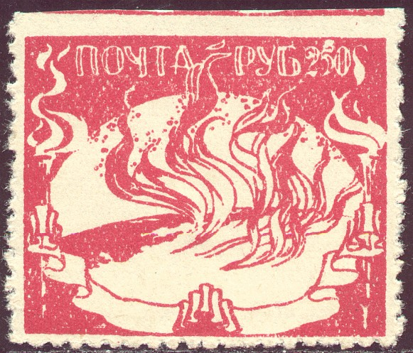
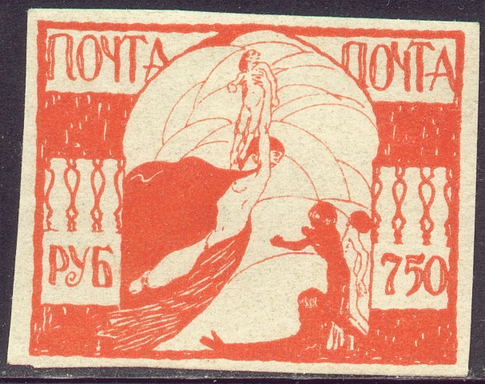

Return To Catalogue - Russia overview
Note: on my website many of the
pictures can not be seen! They are of course present in the
catalogue;
contact me if you want to purchase the catalogue.
These stamps are sometimes called Odessa famine relief charity stamps of 1922, but they are also referred to as a war charity issue of 1922 or as a Kerensky unissued serie of 1919-1920. According to 'Les timbres de phantaisie' (of Georges Chapier, in French), these stamps were never issued in Russia, it is a bogus issue made in Italy. These labels are not very rare. I have seen (and I think this is the whole serie): 250 R red, 500 R blue, 750 R orange, 1000 R green, 2500 R violet, 5000 R brown and 10000 R green. According to the website Martinhoudthetbij.nl this issue was made by the Italian Marco Fontano.
Value of the stamps |
|||
vc = very common c = common * = not so common ** = uncommon |
*** = very uncommon R = rare RR = very rare RRR = extremely rare |
||
| Value | Unused | Used | Remarks |
| All values | c | c | |

5 k brown 10 k blue 15 k orange 20 k violet 30 k yellow 50 k blue 60 k green 75 k green
In most dealer stockbooks large amounts of these stamps can be found in the Russia section.
These stamps have been reprinted and forged: perforated species exists as well as overprinted and surcharged ones, examples:


Also with Russian overprint "Unity and Freedom"
Value of the stamps |
|||
vc = very common c = common * = not so common ** = uncommon |
*** = very uncommon R = rare RR = very rare RRR = extremely rare |
||
| Value | Unused | Used | Remarks |
| All non-overprinted values | vc | vc | |
| Overprinted stamps | c | c | |
This stamp was never issued in Russia, it is a bogus issue made in Italy (according to 'Les timbres de phantaisie' of Georges Chapier, in french). These labels are not vey rare.
Value of the stamps |
|||
vc = very common c = common * = not so common ** = uncommon |
*** = very uncommon R = rare RR = very rare RRR = extremely rare |
||
| Value | Unused | Used | Remarks |
| 50 k | c | c | |
(Image obtained from http://magazzuphil.com )
A 1 R brown also seems to exist.
Even forgeries seem to exist of these stamps.
(reduced sizes)
The above stamps were printed by the Germans (Druckerei Lindacker) during World War II for the Wlassow troops in 1943. They were never set into use. Any cancels on these stamps are forged.
Other mystery items
According to 'Les timbres de phantaisie' (of Georges Chapier, in french), these stamps were propaganda labels for the White Russian army. This books lists:
yellow stamp (admiral Koltchak) brown stamp (general Korniloff) olive stamp (general Aledeiff) orange stamp (admiral Koltchak) olive stamps (attack) Overprinted '1919' in black on old value 10 k blue (general Mai maeffsky) 15 k violet (general Denikine)


{kind=link}
{kind=link}
{kind=link}
{kind=link}